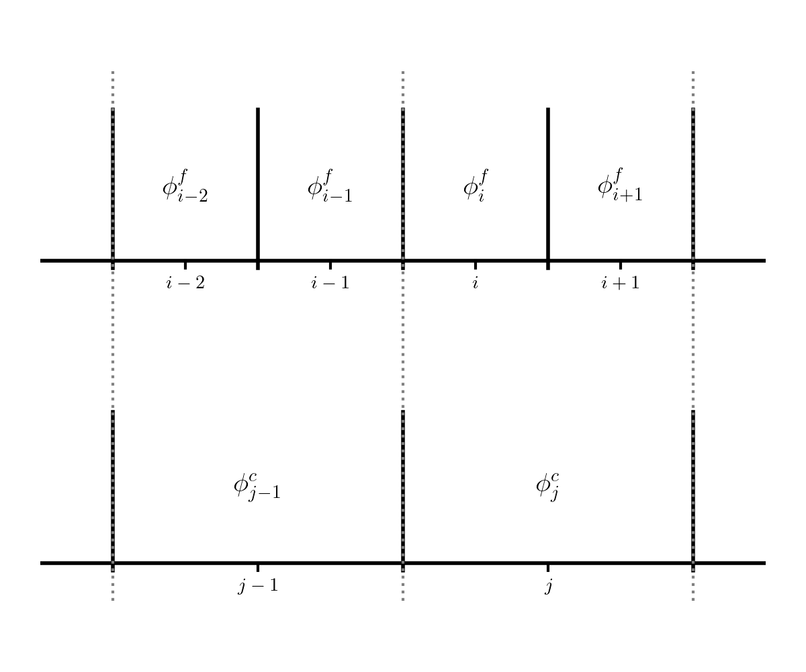

Restriction and Prolongation
Contents
import numpy as np
import matplotlib.pyplot as plt
Restriction and Prolongation#
We need a way to transfer data from the current grid to a coarser grid (restriction) or finer grid (prolongation).
The procedure by which we do this depends on the type of grid we are using. We’ll continue to consider a cell-centered finite-difference / finite-volume grid.
Since the finite-volume method is conservative, we want to ensure that the operations that we do here maintain that conservation.
Consider the following 2 grids:

The fine grid (top) is indexed with \(i\) and the coarse grid (bottom) is indexing with \(j\).
Note that the grids are properly nested: two fine cells fit exactly into a single coarse cell.
In general, the jump in resolution can be something other than 2, but we’ll restrict ourselves to jumps by 2 here.
Restriction#
Consider the case of bringing the data from the fine grid to the coarse grid. Since two fine cells are contained exactly in a single coarse cell, a conservative aveaging of the fine data down to the coarse grid would be:
This is also second-order accurate at the coarse cell cell-center.
Prolongation#
To initialize the two fine cells from a coarse cell, we could do simple direct injection:
This is only first order accurate. A second-order accurate method of initializing the fine data starts with reconstructing the coarse data as a line:
with
Then we integrate this line over the two fine cells to find their values:
Implementation#
Let’s create a basic grid class that implements this. We’ll assume homogeneous Dirichlet boundary conditions.
class Grid:
def __init__(self, nx, ng=1, xmin=0, xmax=1):
self.xmin = xmin
self.xmax = xmax
self.ng = ng
self.nx = nx
self.ilo = ng
self.ihi = ng+nx-1
# physical coords -- cell-centered
self.dx = (xmax - xmin)/(nx)
self.x = xmin + (np.arange(nx+2*ng)-ng+0.5)*self.dx
# storage for the solution
self.phi = self.scratch_array()
def scratch_array(self):
"""return a scratch array dimensioned for our grid """
return np.zeros((self.nx+2*self.ng), dtype=np.float64)
def fill_bcs(self):
"""fill the boundary conditions on phi -- we'll assume Dirichlet"""
self.phi[self.ilo-1] = -self.phi[self.ilo]
self.phi[self.ihi+1] = -self.phi[self.ihi]
def restrict(self):
"""conservative restriction"""
# create a coarse array
ng = self.ng
nc = self.nx//2
ilo_c = ng
ihi_c = ng + nc - 1
coarse_data = np.zeros((nc + 2*ng), dtype=np.float64)
coarse_data[ilo_c:ihi_c+1] = 0.5 * (self.phi[self.ilo:self.ihi+1:2] +
self.phi[self.ilo+1:self.ihi+1:2])
return coarse_data
def prolong(self):
"""
prolong the data in the current (coarse) grid to a finer
(factor of 2 finer) grid using linear reconstruction.
"""
# allocate an array for the coarsely gridded data
ng = self.ng
nf = self.nx * 2
fine_data = np.zeros((nf + 2*ng), dtype=np.float64)
ilo_f = ng
ihi_f = ng + nf - 1
# slopes for the coarse data
m_x = self.scratch_array()
m_x[self.ilo:self.ihi+1] = 0.5 * (self.phi[self.ilo+1:self.ihi+2] -
self.phi[self.ilo-1:self.ihi])
# fill the left children
fine_data[ilo_f:ihi_f+1:2] = \
self.phi[self.ilo:self.ihi+1] - 0.25 * m_x[self.ilo:self.ihi+1]
# fill the right children
fine_data[ilo_f+1:ihi_f+1:2] = \
self.phi[self.ilo:self.ihi+1] + 0.25 * m_x[self.ilo:self.ihi+1]
return fine_data
Let’s test it out. If we are conservative, we should be able to prolong and then restrict some initial data and get back what we started with.
We’ll create 2 grid objects: a coarse and fine one
nx = 6
coarse = Grid(nx)
fine = Grid(2*nx)
Now initialize the coarse data to just a sequence of integers
coarse.phi[coarse.ilo:coarse.ihi+1] = np.arange(nx)+1
coarse.fill_bcs()
coarse.phi
array([-1., 1., 2., 3., 4., 5., 6., -6.])
Notice that because of this choice of initial data and the homogeneous Dirichlet BC on the right, the data is very steep there. That should not matter for this though—we should still be conservative.
Let’s initialize the fine data
fine.phi[:] = coarse.prolong()
fine.fill_bcs()
fine.phi
array([-0.625, 0.625, 1.375, 1.75 , 2.25 , 2.75 , 3.25 , 3.75 ,
4.25 , 4.75 , 5.25 , 7.375, 4.625, -4.625])
Now let’s restrict this and compare to the original coarse data
coarse_new = fine.restrict()
coarse_new
array([0., 1., 2., 3., 4., 5., 6., 0.])
Notice that this is the same as our original data—our prolongation and restriction operators are conservative.